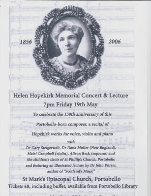
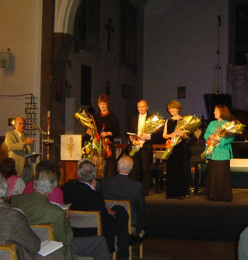
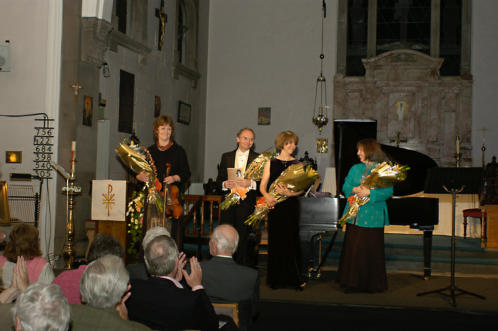
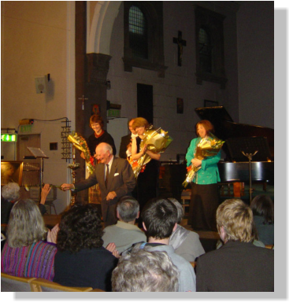
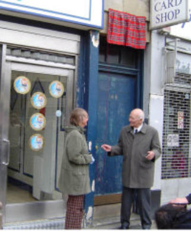
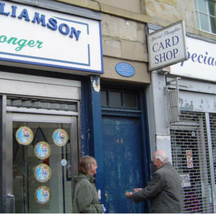

HELEN HOPEKIRK (1856 – 1945)
Pianist and Teacher
Born on 20 May 1856, at what is now 148 – 150 Portobello High Street, Helen Hopekirk was the second child of Helen Croall and Adam Hopekirk, a printer, bookseller and piano retailer. She received her earliest piano training from Miss Stone, governess of Windsor Lodge Academy in Portobello, where she performed in public for the first time in July 1868. While in her teens Hopekirk attended the Edinburgh Institution for the Education of Young Ladies at 23 Charlotte Square. She continued piano instruction under Hungarian pianist George Lichtenstein, studied music theory with Alexander MacKenzie, and appeared as soloist with the Edinburgh Amateur Orchestra Society on three occasions. Fulfilling her father’s dying wish, Hopekirk continued her musical education under Louis Maas, Salomon Jadassohn and Carl Reinecke at the Leipzig Conservatorium in 1876.
By her mid-twenties Hopekirk had appeared with the orchestras of the Gewandhaus in Leipzig and the Crystal Palace in London. She married William A. Wilson (1853-1926), partner in the Edinburgh rope and twine manufacturing firm of Lees & Wilson, on 4 August 1882, thereafter adopting the stage name “Mme. Helen Hopekirk.” For several years Wilson limited his business activity in order to manage Hopekirk’s career. He organized two arduous tours of Great Britain for her in 1880 and 1881, encompassing a total of 42 recital, chamber music and orchestral appearances. Having garnered a repertoire “probably larger than that of any other pianist save Rubinstein” (Boston Evening Traveller), she followed her British successes with an extended tour of the United States in 1883-1886, giving recitals in New York, Brooklyn, Chicago and Boston, among other cities, and presenting as many as four different programmes in as few as twelve days. Lauded for her technique and prodigious memory, the Chicago Tribune remarked that her well-attended recitals had done “more for musical taste than any recitals previously given in Chicago.”
After her American tour Hopekirk wished to study piano again under a master teacher. Her first choice, Franz Liszt, died before she could join his class in Bayreuth, but her second, Theodor Leschetizky, became the single greatest influence on her playing and teaching. Working with Leschetizky in Vienna for extended periods in the mid- to late 1880’s, she acquired the expanded tonal variety that was possible through his approach, integrating finger technique with use of the wrist, arm and shoulder. Years later Hopekirk wrote journal articles in which she recounted Leschetizky’s principles for the benefit of other teachers and performers.
Hopekirk’s second American tour (1891-1892) comprised recitals as well as appearances with orchestras under some of the foremost conductors of the period, including Arthur Nikisch, Walter Damrosch and Theodore Thomas. Returning once more to Europe, Hopekirk reduced her performing and teaching activities to allow more time for composition. When Wilson suffered severe injury in a London traffic accident in January 1897, however, Hopekirk realized it had become necessary for her to procure a dependable income. Accepting an invitation from Leipzig schoolmate George Chadwick to become head of the piano department at the New England Conservatory, she and Wilson moved to Boston in the autumn of 1897. She remained at the Conservatory for four years, thereafter continuing to teach privately in her home in Brookline, Massachusetts, and to perform in major venues throughout New England. After 1900, Hopekirk’s interests increasingly turned toward the work of late Romantic and Impressionist French composers. She gave the American premieres of Vincent d’Indy’s Piano Quartet and Gabriel Fauré’s Piano Quintet with members of the Kneisel Quartet in 1902 and 1907, respectively, and her performances of solo works by Claude Debussy were among the first heard by Boston audiences. Her last extended stay in Scotland came in 1919-1920, when she presented her piano concerto in performances with the Scottish Orchestra under Landon Ronald.
The list of her performances in the United States and Canada grew to include, in addition to nearly 200 solo recitals, twelve appearances as soloist with the Boston Symphony Orchestra (twice in her own compositions) and multiple collaborations with Boston-based chamber groups and soloists. At age 82, she gave her last public performance in a Boston recital devoted entirely to her own compositions. She died in Cambridge, Massachusetts on 19 November 1945.
Composer
Helen Hopekirk was best known as a pianist and teacher during her lifetime, but composition remained a strong interest throughout her career. While attending classes at the Leipzig Conservatory, she wrote short piano pieces and vocal selections that combined aspects of art and parlour song. Following additional study with Carl Nawratil in Vienna in the late 1880s and with Richard Mandl in Paris in the early 1890’s, she scaled down her performance schedule in favor of composition. Devoting winters to teaching and limited performing, and summers solely to composition, Hopekirk added many large-scale works to her oeuvre during the last decade of the 19th century, including two sonatas for violin and piano, Concertstück in D Minor and Concerto in D Major (now lost) for piano and orchestra; six short works for orchestra without soloist, and an unfinished piano trio.
When she and Wilson relocated to Boston in 1897, Hopekirk became the only foreign-born member of the city’s famous circle of composers that included George Chadwick, Amy Beach, Arthur Foote and Mabel Daniels. Many of her piano compositions during the first two decades of the twentieth century reflect Baroque and contemporary French influences encouraged by her repertoire interests as a player. The most distinctive elements of Hopekirk’s music after 1900, however, came from her Scottish heritage. During the summers of 1901 to 1908, she investigated the music of the Scottish Hebrides and made frequent trips to Iona and her beloved Edinburgh. These experiences, along with her friendship with Marjorie Kennedy-Fraser and close readings of poetry by Fiona Macleod, provided inspiration for a spate of folk-inspired songs and character pieces for piano in the last thirty years of her career.
This very successful concert of songs and works for piano and violin composed by Hopekirk was organised by Portobello Community Council with the support of City of Edinburgh Council and aided by a grant from the Hope Scott Trust. Two academic musicians and performers, Drs Gary Steigerwalt and his wife Dana Muller, assembled the programme and travelled from their home in South Hadley, Massachusetts, where Gary is Professor of Music at Mount Holyoke College, to perform in Portobello. Prior to the recital composer, writer and musicologist, Dr John Purser, author of Scotland’s Music, gave an illustrated talk on Hopekirk and her times.
150th Anniversary Celebrations 19th – 21st May 2006
Vote of Thanks to performers by Robert Gatliff, Community Council Chair
(l to r) Mairi Campbell (violin); Gary Steigerwalt (piano); Dana Muller (piano); Alison Beck (soprano)
William Hopekirk presenting his wife with a rose from Dana’s bouquet.
Commemorative Plaque
Portobello Community Council also commissioned a plaque to honour Hopekirk and this was erected above the street door at 148 Portobello High Street. The plaque was unveiled on Sunday 21st May by Mr William Hopekirk, Helen Hopekirk’s last surviving relative in Scotland. Donations towards the cost of the plaque were received from a number of persons in Massachusetts who had benefited from Hopekirk’s influence as a teacher in Boston.
Celia Butterworth, Portobello Community Council, and William Hopekirk prepare to unveil the plaque.





